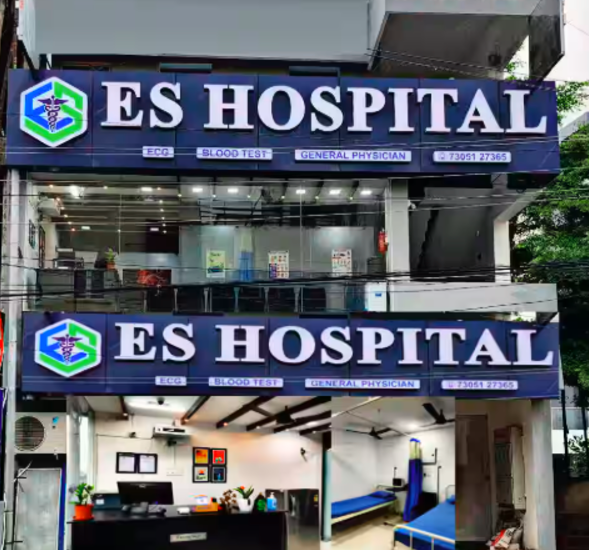

Villupuram
ES Hospital

E.S Hospital one of the distinguished Multi Super- Specialty hospitals in Villupuram Dist. Providing comprehensive medical care in areas of cardiology, cardio thoracic surgery, neurology, neuro surgery , ortho pedics, nephrology, gynecology, gastro enterology, urology, paediatriecs, diabetics
Established is 2007, E.S Hospital became a house hold name for tertiary care hospital services in villupuram over the years late 1985, E.S Hospital Health care, lead by the vision of Dr. S.Saravanan of creating an integrated health care delivery system in villupuram dist.
Acquired stakes E.S Hospital, thus, paving the way to superlative health care services.